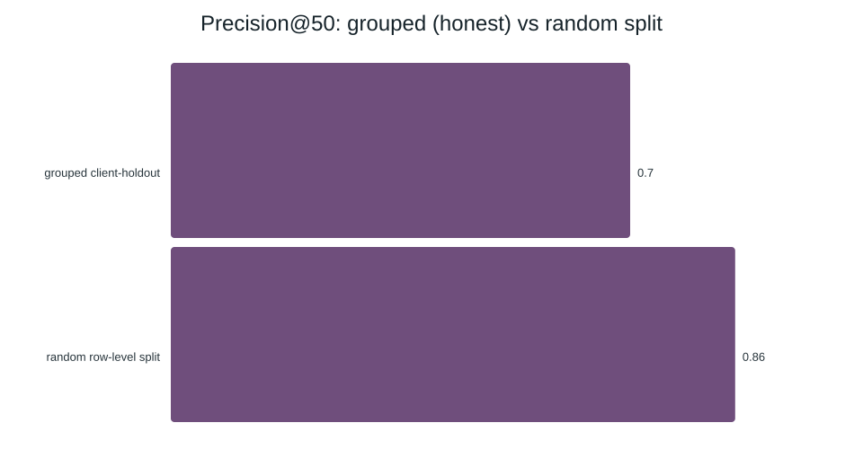
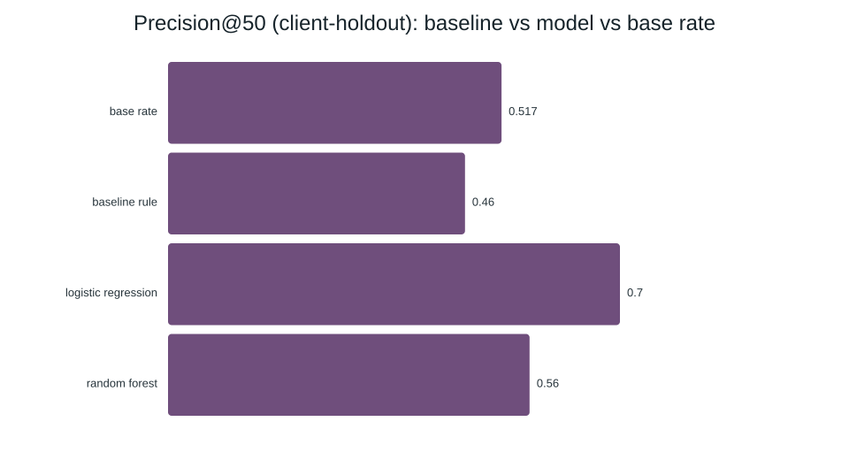
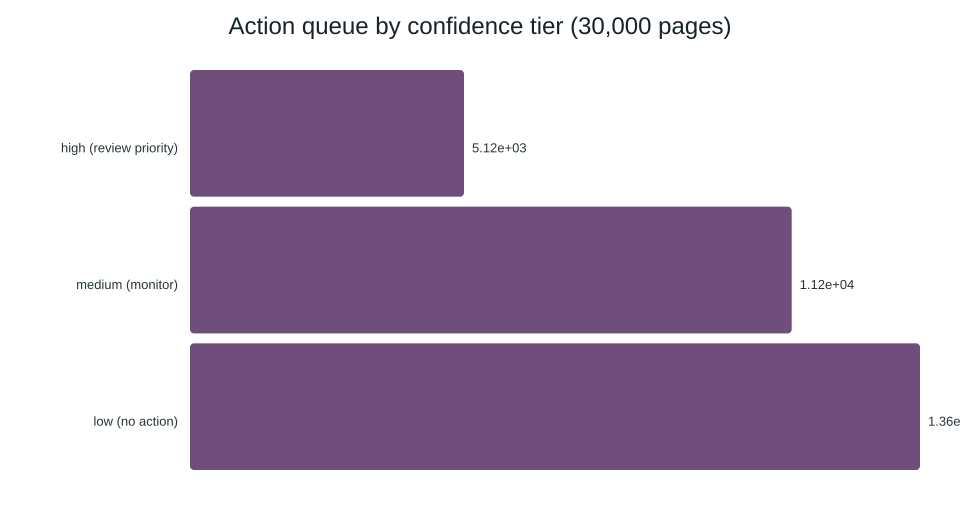

Abstract
Which of a client's existing pages should an SEO editor review first, when 54.2% of pages in this sample are declining and the obvious signal — keyword search volume — barely correlates with actual traffic (r = 0.001)? Using FlyRank's 30,000-page anonymized starter export (32 clients, trailing 90-day search and analytics metrics), a Logistic Regression model trained on pre-decision signals only — visibility, position, age, content depth, never the trend fields the label is built from — ranks declining pages at Precision@50 = 0.70 on a held-out set of 8 clients the model never trained on, against a base rate of 0.517 and a transparent staleness rule that manages 0.545. The output is a three-tier, reason-coded review queue an editor can act on directly — decision-support for where to spend a limited review hour, not a verdict on any one page.
1. The Problem
Editors have limited hours. A client's page library grows every month, and only some of it
is quietly losing search traffic. The instinct is to chase the pages with the highest
keyword search volume — but in this portfolio, search volume barely moves with actual
impressions (corr(search_volume, impressions_90d) = 0.001). Volume tells you
almost nothing about which page needs attention today.
The decision this supports: which page an editor opens first in a weekly review backlog. The action: refresh, expand thin content, fix a weak click-through rate, or simply keep watching — the editor decides; this work only orders the queue. The cost of a wrong call: a false flag wastes an hour on a healthy page; a missed decline lets a traffic-losing page sit untouched, and because misses compound, the method needs to favor catching real decliners near the top of the list without burying editors in false alarms.
Why does this need a model at all, rather than one clean if-statement? Because the honest rule turns out to be too narrow to matter past its first few hits — which is exactly what Section 3 shows.
2. Data
The analysis uses FlyRank's anonymized starter export: 30,000 rows, one row per pseudonymized content page, across 32 pseudonymized clients, with trailing 90-day search and analytics metrics as of one export date. (FlyRank's full warehouse holds 519,606 items across 104 clients; this capstone works the smaller teaching slice, and every number below describes that slice, not the whole portfolio.)
What was deliberately left out, and why
trend_direction,trend_pct— these define the label itself (a page counts as "declining" whentrend_direction == "down"), so they can never be inputs.impressions_last_30d/prev_30dand their click/session siblings — recomputingtrend_pctdirectly from these columns matched the stored value 100% of the time. They aren't just correlated with the label; they are its formula.provider_used,model_used— describe how a page was written, not how it's performing.- Raw
impressions_90d/clicks_90d/sessions_90d/ai_sessions_90d— replaced by theirlog1pversions, since traffic is heavy-tailed. content_id,client_id— used only to group the train/test split by client, never as model inputs.
trend_pct back into an
otherwise-honest feature set as a deliberate attack test pushed Precision@50 from 0.70 to
1.00 and ROC AUC to 0.999 on the identical split — confirming both that the
excluded column really is that leaky, and that the evaluation setup actually catches a real
leak rather than quietly missing one.
No client names, domains, URLs, or raw search queries appear anywhere in this dataset, this repository, or this page.
3. Methodology
Baseline: a rule a human can read
A page is worth reviewing if it's stale
(days_since_last_update ≥ 180) and still visible
(impressions_90d ≥ 500) — rank the pages that pass both by exposure. Simple
enough to say in one breath, and 94% correct on the pages it actually flags.
The catch surfaced by a hand review of its own top 20: only 17 of 30,000 pages ever pass both conditions. 99.4% of this slice was updated within 180 days (median: 20 days), so the threshold almost never fires. Every rank past 17 is an arbitrary zero-score tie, not a real recommendation — which is why this rule, honest as it is, is meant to be beaten.
On the held-out clients, only 3 pages receive a positive rule score; 47 of the top-50 slots therefore fall inside the zero-score tie. Precision@K handles that cutoff tie by reporting the tied group's expected hit rate instead of letting row order choose the result. The deterministic baseline is 0.589 at Precision@20 and 0.545 at Precision@50.
Model: readable first, complex only if it earns it
Logistic Regression, then Random Forest — both scored by predicted probability at
Precision@K, since the deliverable is a ranking, not a single yes/no call. Eighteen numeric
features (visibility, position, age, content depth, plus missingness flags so a blank
search_volume or word_count — which goes blank by content type,
not at random — isn't silently read as zero) and eight one-hot categorical features, all
drawn from the exclusion-checked feature set in Section 2.
Validation: held out by client, not by row
GroupShuffleSplit(test_size=0.25, random_state=42) grouped on
client_id — 24 clients train, 8 clients test, so no client's pages appear on
both sides. This matters more than it sounds: the identical model scored on a random,
non-grouped split instead reads Precision@50 = 0.86 — 16 points higher — because
31 of 32 clients leak across train and test under a random split. The number this paper
reports (0.70) is the grouped one.

4. Results
Logistic Regression wins outright over both the baseline and Random Forest, on the same 8-client held-out test set (7,115 pages, base rate 0.517):
| Model | ROC AUC | Avg. precision | Precision@20 | Precision@50 |
|---|---|---|---|---|
| Baseline rule | — | — | 0.589 | 0.545 |
| Logistic Regression | 0.610 | 0.605 | 0.80 | 0.70 |
| Random Forest | 0.603 | 0.587 | 0.55 | 0.56 |

Where it's wrong
False positives cluster on moderate-traffic pages that are actually trending up or holding steady — they match every pre-decision signal a real decliner would show, but the model has no access to trend history (excluded as leakage), so it can't see which way they're actually moving. False negatives cluster on very-low-traffic old pages that genuinely are declining but carry almost no signal to separate from noise.
Top features — days_with_impressions (0.149), log_impressions_90d
(0.130), avg_position (0.103), content_age_days (0.087) — are all
plausible correlates of a page's trajectory, and none dominates suspiciously. That matters:
a single feature owning nearly all the importance is usually a sign of leakage, and that
isn't what this shows.
5. Limitations
- No real future outcome. The label is a proxy from one 90-day snapshot's 30-vs-30-day comparison, not an observed outcome after anyone acted. Nothing here shows that refreshing a flagged page actually recovers it.
- A sample, not the population. 30,000 pages / 32 clients here versus a documented full warehouse of 519,606 items / 104 clients — these rates describe this teaching slice, not every client.
- Client-specific memorization. The 0.86-vs-0.70 split gap shows part of what the model knows is pattern specific to its 24 training clients. A genuinely new client may score below the 0.70 headline.
- Feedback loop. Once editors act on this queue, refreshed pages stop being an untouched observational sample. A future retrain on post-intervention data risks learning the review policy instead of the content — a risk to monitor, not one this analysis can rule out on its own.
- No causal claims. No experiment, no randomization, no control group. Everything here is observed, directional, decision-support — never "refreshing this page will improve traffic."
6. Ranked Recommendations
The winning model, refit on all 30,000 pages, sorted into three tiers by its own probability:

Every flagged page carries a reason code — stale_but_visible,
thin_content, or page_one_low_ctr where a simple rule fires. But
75.8% of high-tier pages pass none of those simple rules; they're tagged
model_flagged instead — an honest label for "the model's combined read of many
weak signals says review this, but no single rule explains why." That's precisely the
model's edge over the rule baseline in Section 3, and precisely why a human closes the loop,
not a machine.
Before acting on a flagged page
- Confirm it isn't already scheduled for retirement or consolidation.
- For
model_flaggedrows especially, read the page — no simple rule explains the flag, so a human sanity check matters more here. - Confirm the export this queue was built from is recent.
7. Reproducibility
Python 3.11, pip install -r requirements.txt. random_state=42
everywhere a seed applies — the split, Logistic Regression, and Random Forest.
pip install -r requirements.txt
jupyter execute work/notebooks/capstone.ipynb --inplace
That single command rebuilds the feature set from the raw export, refits the baseline and
both models on the exact grouped split above, re-runs the leakage attack test, and
regenerates every chart and number on this page. The receipts are committed in the repo at
work/outputs/capstone_metrics.json and docs/assets/*.svg — this
is checkable, not taken on faith. Full write-up, notebooks, and data contract:
github.com/SodiqAbdulwaris/flyrank-internship-ml.